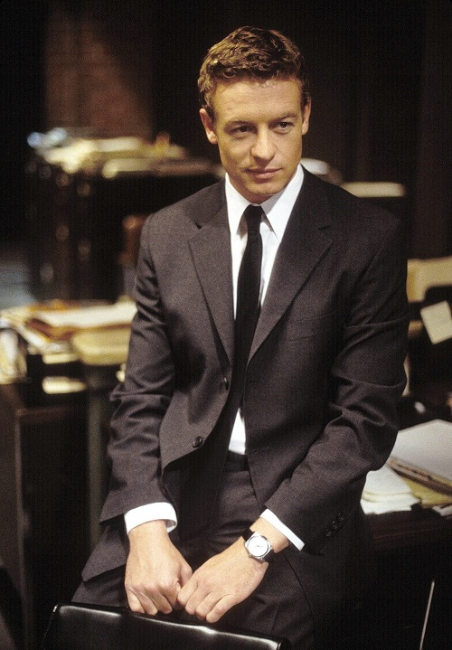

Біографія

Са́ймон Лу́кас Бе́йкер (англ. Simon Lucas Baker) — відомий австралійський
та американський актор, режисер і продюсер.
Світову славу йому принесла головна роль
Патріка Джейна
у детективному серіалі «Менталіст» (2008–2015),
а також роль Ніка Фалліна в серіалі «Захисник»
та Крістіана Томпсона
у фільмі «Диявол носить Prada»
«Моє життя досить хаотичне й шалене,
але я дійсно цим захоплений».
(“My life is pretty hectic, but I'm really into it”)..
Життєпис
Саймон Бейкер народився в Лонсестоні, Тасманія, в сім'ї Елізабет Лаббертон, шкільної вчительки англійської мови, і Баррі Бейкера, садівника і механіка.
Саймон був вихований у дусі католицизму, навчався в середній школі Балліна, яку закінчив 1986 року.
Потім Бейкер перебрався до Сіднея, щоб здобути медичну освіту, проте він так і не одержав диплома.
Його дедалі частіше запрошували на зйомки після того, як він сходив на прослуховування, щоб підтримати друга.
Емігрував до Сполучених Штатів 1995 року.
Від 1998 року до 2020 року був одружений з австралійською акторкою Ребеккою Рігг (жили разом з 1993), у подружжя троє дітей: Стелла (1993), Клод (1998) і Гаррі (2001).
Саймон Бейкер і Ребекка Рігг оголосили про розлучення у січні 2021 року, але побіжно пояснили, що їх розставання насправді відбулося з квітня 2020 року.
Колишня пара не називає причину розколу шлюбу, проте зазначає, що вони залишилися друзями.
Кар'єра

Раніше Саймон Бейкер виступав на змаганнях державного рівня з серфінгу та водного поло і був спортсменом-чемпіоном.Його акторська кар'єра стартувала на австралійському телебаченні наприкінці 1980-х років, спочатку він був відомий як Саймон Бейкер Денні.
Знявся в музичному кліпі на пісню «Read My Lips» Мелісси Ткауц і музичному відео «Love You Right» популярного австралійського тріо «Euphoria» 1991 року, поки не потрапив в успішний серіал «Вдома та в дорозі» на роль Джеймса Хілі, у мильну оперу «E-стріт» і серіал «Школа розбитих сердець».
Бейкер перебрався до США, де почав роботу під прізвищем свого вітчима, Тома Денні.
Він пройшов кастинг на невелику, але значиму роль Метта Рейнольдса в оскароносному трилері Кертіса Хенсона «Секрети Лос-Анджелеса», завдяки успіху якого надалі став отримувати ролі у фільмах.
2000 року Саймон зіграв астронавта Чіпа у фантастичному фільмі Ентоні Хоффмана «Червона планета» разом із Велом Кілмером, Керрі-Энн Мосс і Бенджамін Бретт.
Також йому дісталася одна з ролей драми Чарльза Шаєра «Історія з намистом» і головна чоловіча роль у телесеріалі «Захисник», яку він грав упродовж трьох сезонів показу з 2001 до 2004 року.
За роль адвоката Ніка Фелліна в серіалі «Захисник» Бейкера було номіновано на премію «Золотий глобус» 2002 року.
Він виконав роль героя-альтруїста у фільмі жахів Джорджа А. Ромеро «Земля мертвих» і Девіда Вокера, нещасного чоловіка Елайн Вокер, у комедії Алана Брауна «Книга любові».
Не так давно Саймон зіграв Браяна Келлі у мелодрамі «Щось новеньке», також виконав роль Родеріка Блана, головного персонажа комедії Деніела Вотерса «Секс і 101 смерть», де його партнеркою на знімальному майданчику стала Вайнона Райдер.
Бейкер, як провідний актор, отримав роль Джефа Бріна в телевізійному міні-серіалі «Злодії екстра-класу» і роль Крістіана Томпсона у фільмі Девіда Френкеля «Диявол носить Прада» 2006 року.
Бейкер — кандидат на роль Стіва Тревора у давно заявленому фільмі «Диво-Жінка».
Одна з найвідоміших ролей Бейкера — Патрік Джейн, головний персонаж серіалу «Менталіст» каналу CBS.
Його герой — надзвичайно розумний, проникливий детектив, який найкраще з усіх розплутує таємниці і заманює злочинців у свої хитромудрі пастки.
Показ серіалу розпочався 2008 року.
За цю роль Бейкера було номіновано на премії «Еммі» і «Золотий глобус» 2009 року.
Дати
| Рік | Подія |
|---|---|
| 1969 рік 30 липня | Народження |
| 2002 рік | Номінація за «Найкращу чоловічу роль у драматичному серіалі» за серіал «Захисник» |
| 2009 рік | Номінація Primetime Emmy Awards як «Найкращий актор у драматичному серіалі» за «Менталіст». |
| 2010 рік | Номінація за «Найкращу чоловічу роль у драматичному серіалі» за серіал «Менталіст». |
| 2013 рік | Отримав іменну зірку на Алеї слави в Голлівуді (номер зірки 6352) за внесок у індустрію телебачення. |